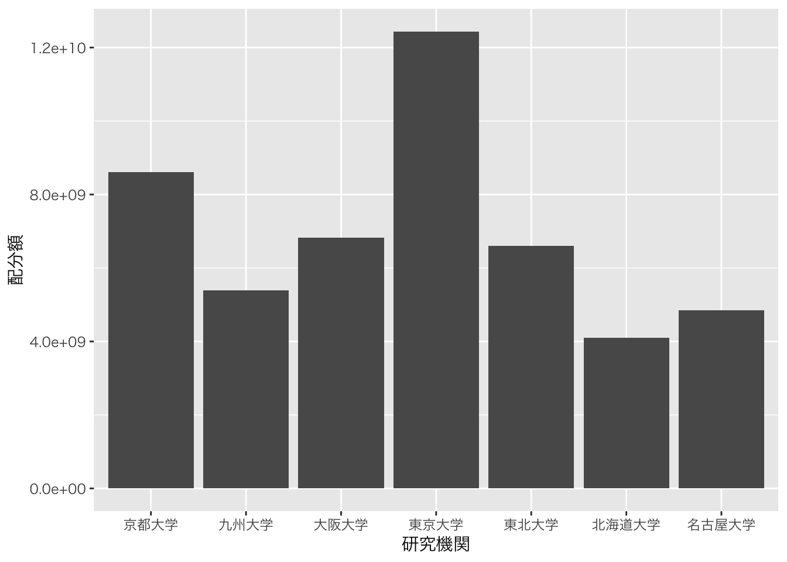
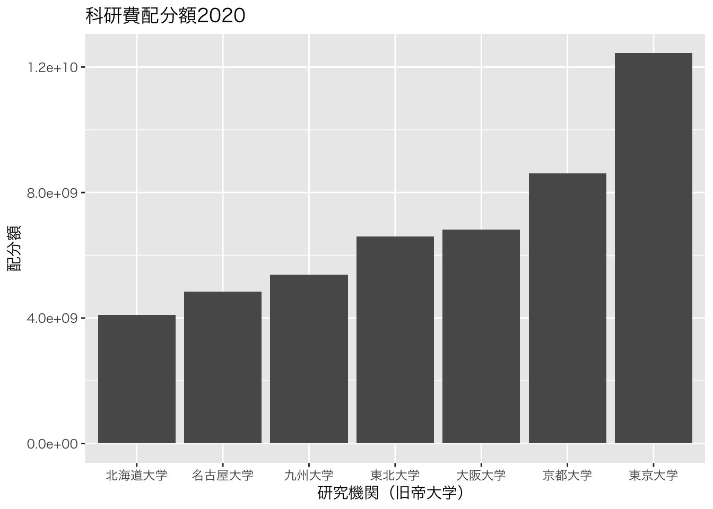
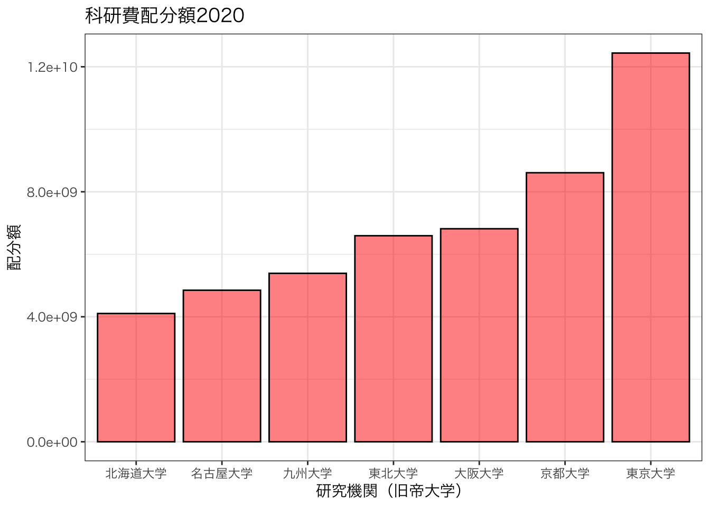
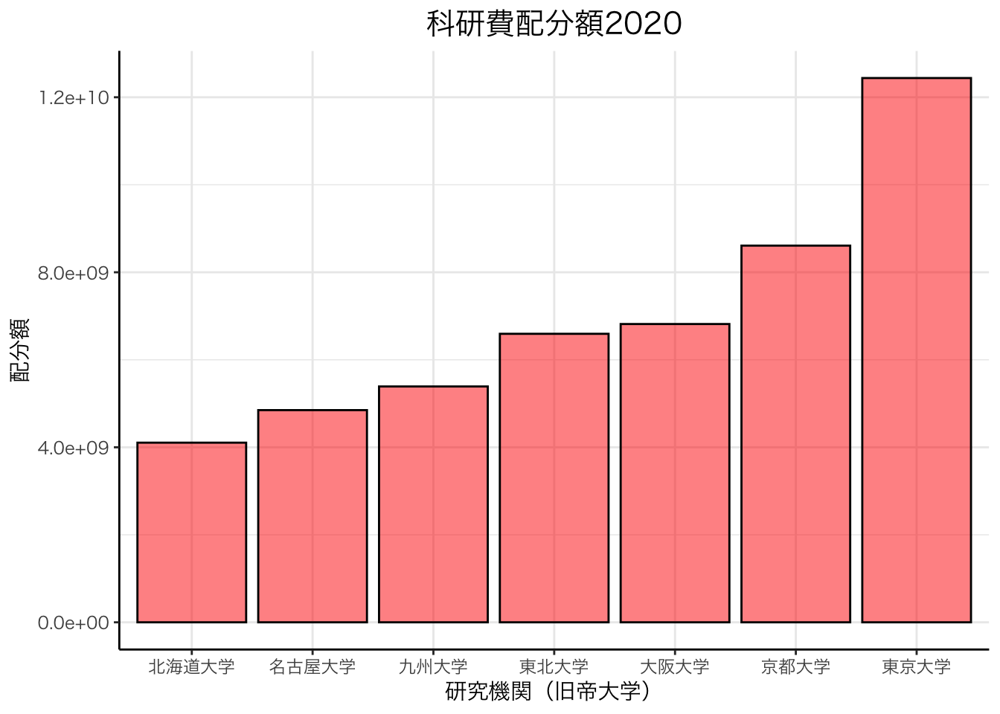
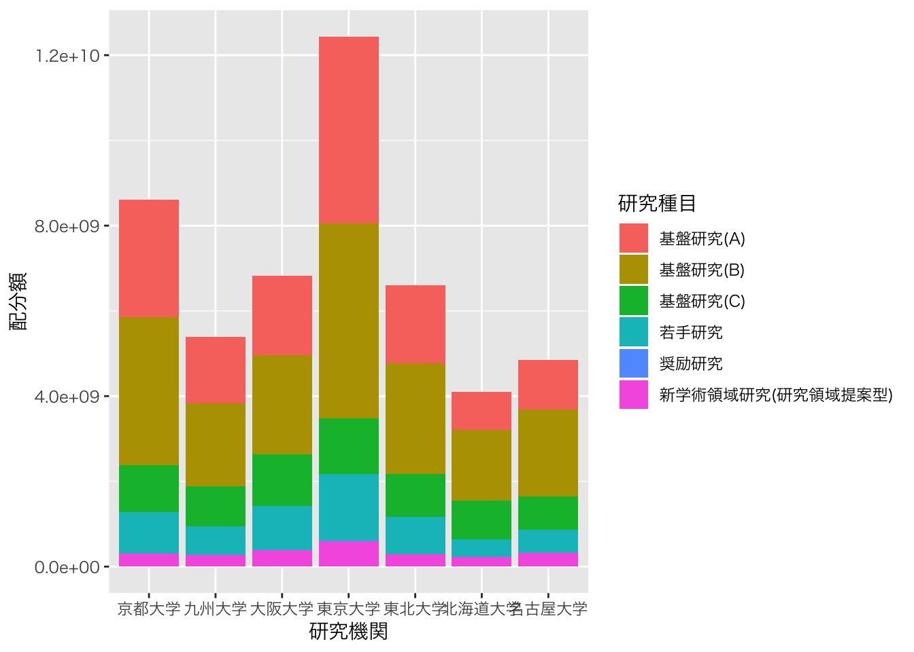
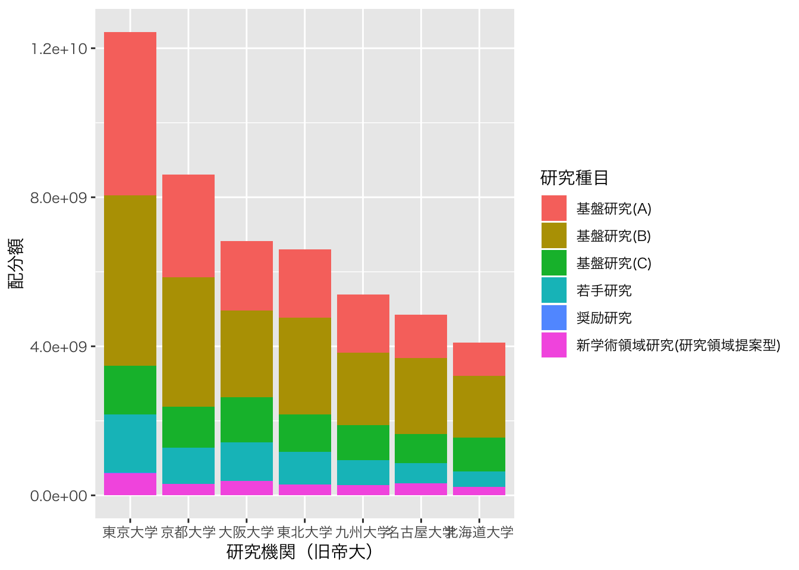
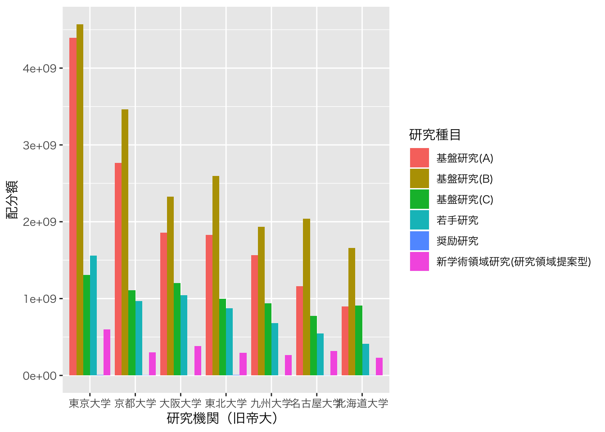
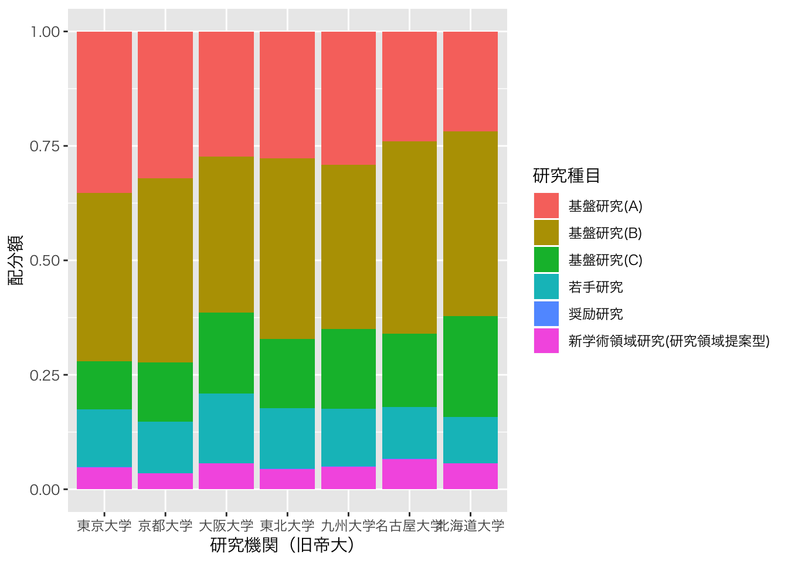
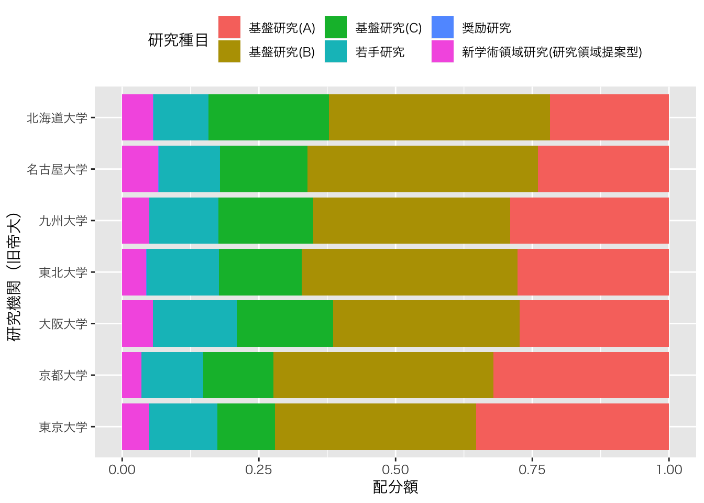
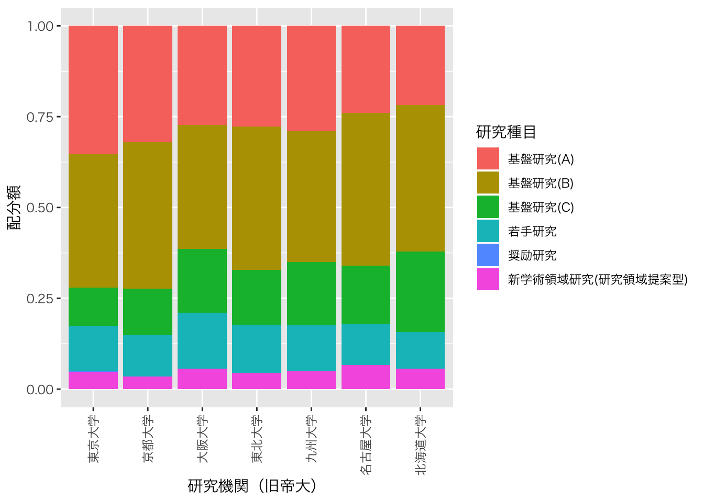

Takuya Kubo, 2020/05/20
このページでは、ggplot2パッケージを使って科研費の配分額を棒グラフで可視化する方法を紹介していきます。具体的には以下の２種類のグラフを書いていきます。
必要となるパッケージは以下の通りです。今回は2020年度の採択課題データを用います
# インストールされていない場合は、以下のコマンドの「#」を外して実行
# install.packages("data.table")
# install.packages("dplyr")
# install.packages("DT")
# install.packages("ggplot2")
# パッケージの読み込み
library(data.table) # 高速なデータインポートのため
library(dplyr) # データの整理のため
library(DT) # 集計表の出力のため
library(ggplot2) # グラフ化のため
# 使用するデータのインポート
d <- fread("kaken_2020.csv")事前に研究機関ごとの配分額を集計しておきます。ここでの操作についてはこちらのページで詳しく紹介していますので、適宜ご参照ください。なお、以下では研究機関を旧帝大に限定して進めていきます。
D1 <- d %>%
mutate(総配分額 = as.numeric(総配分額)) %>%
group_by(研究機関) %>%
summarize(配分額 = sum(総配分額)) %>%
filter(研究機関 %in% c("北海道大学","東北大学", "東京大学", "名古屋大学", "京都大学", "大阪大学", "九州大学"))
datatable(D1)まず、最低限のグラフを描画します。ggplot2では、基本的にggplot関数とaes関数、geom_*関数があればグラフが作成できます。以下のコードではtheme_gray関数も使っていますが、これは日本語の文字を表示させるためです。なお、ggplot関数以降の関数は全て「+」で繋げる必要がある点にご注意ください。
# データセットの指定とx軸に使う列、y軸に使う列を指定（aes関数）
ggplot(D1, aes(x = 研究機関, y = 配分額)) +
# 描画タイプを棒グラフに指定（そのままの値を使用）
geom_bar(stat = "identity") +
# 日本語が表示可能なフォントに変更
theme_gray(base_family = "HiraKakuPro-W3")
上記のグラフを見栄えが良くなるよう段階的に修正していきます。詳しくはキリがないので説明いたしませんが、以下では棒を配分額に従って並べ替え、軸ラベルの修正、グラフタイトルの追加を行なっています。
# 配分額によって棒を並び替える（reorder関数）
ggplot(D1, aes(x = reorder(研究機関, 配分額), y = 配分額)) +
geom_bar(stat = "identity") +
theme_gray(base_family = "HiraKakuPro-W3") +
# 軸ラベルの変更
xlab("研究機関（旧帝大学）") +
# グラフタイトル
ggtitle("科研費配分額2020")
以下では、棒の枠線の色、棒の色、棒の透明度の変更を行い、全体のテーマを白黒を基調にしたものに変えています。
ggplot(D1, aes(x = reorder(研究機関, 配分額), y = 配分額)) +
# 棒の枠線の色（color）、棒の色（fill）、棒の透明度の変更（alpha）
geom_bar(stat = "identity", color = "black", fill = "red", alpha = 0.5) +
# 白黒テーマに変更
theme_bw(base_family = "HiraKakuPro-W3") +
xlab("研究機関（旧帝大学）") +
ggtitle("科研費配分額2020")
最後に、以下では図の枠線を削除し、x軸線、y軸線の追加、グラフタイトルの書式を変更しています。
ggplot(D1, aes(x = reorder(研究機関, 配分額), y = 配分額)) +
geom_bar(stat = "identity", color = "black", fill = "red", alpha = 0.5) +
theme_bw(base_family = "HiraKakuPro-W3") +
theme(panel.border = element_blank(), # 枠線の削除
axis.line = element_line(), # x軸、y軸線の追加
plot.title = element_text(size = 15, hjust = 0.5) # タイトルのサイズと位置を変更
) +
xlab("研究機関（旧帝大学）") +
ggtitle("科研費配分額2020")
先ほどと同様に事前に研究機関×研究種目ごとの配分額の合計を集計しておきます。
D2 <- d %>%
mutate(総配分額 = as.numeric(総配分額)) %>%
group_by(研究機関, 研究種目) %>%
summarize(配分額 = sum(総配分額)) %>%
filter(研究機関 %in% c("北海道大学","東北大学", "東京大学", "名古屋大学", "京都大学", "大阪大学", "九州大学"))
datatable(D2)まず、最低限のグラフを描画します。先ほどは研究機関と配分額をそれぞれx軸とy軸に指定しましたが、今回は新たに研究種目を配色（fill）として指定しておきます。なお、こうすることによって自動的に凡例も追加されます。
# データセットの指定とx軸に使う列、y軸に使う列, 配色を指定（aes関数）
ggplot(D2, aes(x = 研究機関, y = 配分額, fill = 研究種目)) +
geom_bar(stat = "identity") +
theme_gray(base_family = "HiraKakuPro-W3")
以下では、棒を配分額によって並び替えています。先ほどと違う点は、reorderの中で配分額に「-」をつけることで逆の並び順にしています。他にも、x軸ラベルを修正しています。
ggplot(D2, aes(x = reorder(研究機関, -配分額), y = 配分額, fill = 研究種目)) +
geom_bar(stat = "identity") +
theme_gray(base_family = "HiraKakuPro-W3") +
xlab("研究機関（旧帝大）") 
棒は研究種目別に色分けされて積み上げられていますが、geom_bar関数の中で「position = “dodge”」と指定することで横に並べることもできます。
ggplot(D2, aes(x = reorder(研究機関, -配分額), y = 配分額, fill = 研究種目)) +
# 横並びの棒グラフにする
geom_bar(stat = "identity", position = "dodge") +
theme_gray(base_family = "HiraKakuPro-W3") +
xlab("研究機関（旧帝大）") 
他にも、geom_bar関数の中で「position = fill」と指定することで100%積み上げ棒グラフにもできます。
ggplot(D2, aes(x = reorder(研究機関, -配分額), y = 配分額, fill = 研究種目)) +
# 100%積み上げ棒にする
geom_bar(stat = "identity", position = "fill") +
theme_gray(base_family = "HiraKakuPro-W3") +
xlab("研究機関（旧帝大）") 
x軸のテキストが判別しづらくなったため、グラフを90%回転させて対処します。また、ついでに判例の位置をグラフ上部に移動します。
ggplot(D2, aes(x = reorder(研究機関, -配分額), y = 配分額, fill = 研究種目)) +
geom_bar(stat = "identity", position = "fill") +
theme_gray(base_family = "HiraKakuPro-W3") +
xlab("研究機関（旧帝大）") +
# グラフを90度回転させる
coord_flip() +
# 凡例を上部に移動する。
theme(legend.position = "top")
他にも、軸のテキスト見えない時の対処法としては軸のテキストを90%回転させます。
ggplot(D2, aes(x = reorder(研究機関, -配分額), y = 配分額, fill = 研究種目)) +
geom_bar(stat = "identity", position = "fill") +
theme_gray(base_family = "HiraKakuPro-W3") +
xlab("研究機関（旧帝大）") +
# 軸テキストを90度回転させて、縦位置、横位置の調整
theme(axis.text.x = element_text(angle = 90, hjust = 1, vjust = 0.5))
グラフの描画はキリがないのでここまでにしておきます。ggplot2を使ったグラフの描画は自由度が高い反面、色々な関数や引数を使えないと理想のグラフは実現できません。私も最初の方はテキストやサイトを参考にしながら、手を動かしつつ覚えていきましたし、今なお勉強中です。皆さんも、まずは、自分好みのスタイルでグラフを作ってみることをお勧めします。なお、今回紹介していない点で何か聞きたいことがあれば遠慮なくお知らせください。